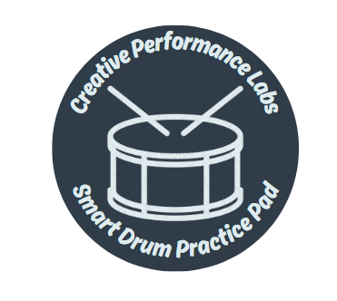

User Manual
1.0 Introduction
1.0 Introduction
Welcome to the user manual for the Smart Drum Practice Pad, created by the Creative Performance Labs student engineering team. The prototype we developed is an enhanced drum practice pad capable of measuring the force of strikes and displaying that data visually via a companion app.
Powered by rechargeable batteries, the pad is portable and can be used anywhere—just bring drumsticks and a mobile device. Bluetooth connectivity enables wireless pairing with the app, which was fully developed by one of the team members.
Once connected, the app displays force feedback using a force vs. time graph. Users can save, share, or delete session data as needed. Additionally, the app includes a built-in metronome that supports a tempo range of 0–240 BPM.
This manual will guide you through the setup, operation, and best practices for optimal performance. If you need help, check the FAQs section. Still stuck? Don’t hesitate to contact one of our five team members listed in the Support section.
2.0 Setup Instructions
To prepare the drum pad for use, please follow the following instructions:
- Place the drum pad indoors on a stable, flat surface.
- Press the power switch to turn on the pad. The LCD should come to life and show the power level of the drum pad in percentage.
- Open the app on your phone or mobile device.
- Press the three dots at the top right corner.
- Select “Bluetooth”.
- On the Bluetooth page, hit the “Scan for Devices” button.
- Wait until a device comes up.
- Hit “Connect” next to the device.
- Wait until the Pad’s LCD says “Connected”.
- Press the start button on the Graph Page.
- Once the session is complete, hit the “Stop” button.
- A text input will pop up to name the session.
- Press “Save” to save a session.
- Press “Cancel” to delete a session.
- Saved sessions can be found on the Data Page.
3.0 How to Use
Here’s how you can use the product effectively:
Metronome Page
- Input the desired BPM in the BPM text box.
- Select the time signature based on the music sheet.
- The “Bar Length” is the bottom number.
- The “Beats per Bar” is the top number.
- Select the number of “Clicks per Beat”.
- Choose the desired sound output.
- Press “Start”.
- The visual and audio displays will start.
- The visual display will also play on the graph screen.
- Option to turn the sound output on and off.
- When done, press “Stop”.
Data Page
- Saved sessions will automatically be listed in alphabetical order.
- You can filter sessions based on title or length.
- Press the Replay button to open the graph at the bottom of the page.
- Enter the BPM that was used for that session to verify the accuracy of hits.
- The graph can be zoomed in and out for easier viewing.
- Press the Download button to download the CSV file to your phone.
- Press the Share button to share the CSV file with anyone.
- Press the Delete button to permanently delete the session.
Settings Page
- Toggle between Light and Dark Mode.
- Change the App's Accent Colour from the dropdown list.
- Open the user manual.
4.0 Operational Tips
To ensure optimal performance of the smart drum practice pad, please follow these guidelines:
- ONLY operate the pad indoors, or if necessary, outdoors in sunny weather only. The electronics are sensitive to moisture and can be damaged by rain, snow, or humidity.
- ONLY place the pad on a surface with an elevation of fifteen degrees or more. Avoid large elevation angles that could cause the pad to slide. Due to its weight, a fall can cause serious, irreparable damage.
- ONLY clean the striking material using a dry or slightly damp cloth. Be gentle and ensure the pad is powered off first. You may use a small amount of dish soap, but do not use harsh chemicals. The cloth should not be soaked—if water is used, wring it out before wiping. Always dry the rubber before resuming operation.
5.0 Frequently Asked Questions (FAQs)
Q: Can I make the feedback graph any larger?
A: Yes, you can. There are two ways in which you can enlarge the graph:
- Rotate your electronic device to horizontal orientation. The app will adapt and enlarge the force vs. time graph.
- Press on the graph to open a larger pop-up display. To exit, tap anywhere on the screen.
Q: What is the maximum tempo at which I can play so that the pad will be able to generate feedback for?
A: The force sensors within the drum pad can process force readings up to a maximum of 16th notes at 160 BPM.
Q: How much practice session data can I save in the app?
A: At least 2 hours of data can be saved on any mobile device. Maximum storage depends on device capacity. New phones with ample space can store more sessions than older, nearly full devices.
Q: Can the pad help me tell if I am weaker in one hand?
A: Yes! Strike the pad once with each hand, starting with your dominant hand. The first peak on the graph shows the force of the first strike; the second peak shows the second. A significantly smaller second peak indicates your non-dominant hand is weaker. To monitor progress, continue alternating hands—if every second peak remains lower, your non-dominant hand still needs strengthening.
6.0 Support
For assistance regarding the setup, operation, and troubleshooting of the smart drum pad, please contact any member of the team using the information provided below: